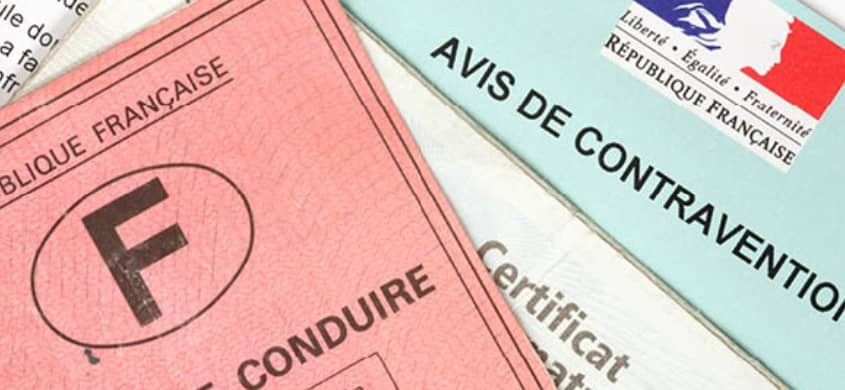

Droit pénal
Avocat depuis 2018, Maître Kévin JURION s'est consacré à la défense pénale tout au long de son parcours professionnel.
Il a ainsi développé une réelle expertise en matière pénale et vous assiste devant toutes les juridictions : Tribunal de police, Tribunal correctionnel, Cour d'assises, Cour d'appel, Juge d'instruction, Juge des libertés et de la détention, Juge de l'application des peines etc.
Le cabinet de Maître Kevin JURION vous accompagnera tout au long de la procédure avec la mise en place d'une stratégie adaptée afin de préserver vos intérêts, et vous défendra avec force et conviction.
Maître Kevin JURION est susceptible de vous assister dès la phase d'enquête et jusqu'à la phase d'exécution de la peine.
Le cabinet de Maître Kevin JURION peut intervenir devant les juridictions pénales de la France entière.
Droit du permis de conduire
Fort d'une véritable expertise technique en droit routier,Maître Kévin JURION a à coeur de vous proposer une défense de la plus grande qualité ainsi qu'un accompagnement sur-mesure.
Après avoir plaidé devant la majorité des juridictions pénales du territoire, Maître Kévin JURION intervient avec réactivité et efficacité concernant toutes les problématiques liées au permis de conduire et l'automobile, et ce, sur l'ensemble du territoire national.